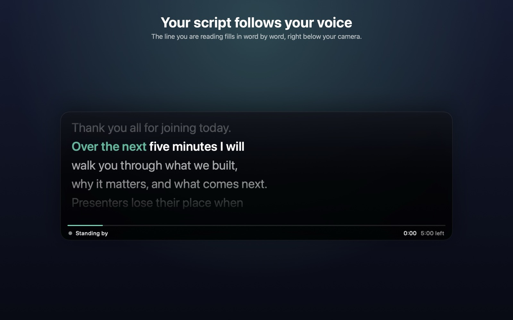

A teleprompter that follows your voice
Underlens for Mac moves your script as you speak, in a small overlay right below your camera. This page covers common questions and how to get help.

Getting started
- Write or paste your script in the main window. Start a line with
#for a section, put notes to yourself in[brackets], and start a line with>for a key point. - Choose the language you will speak, next to the script title.
- Unlock the overlay from the menu bar icon, drag it under your camera, then lock it again.
- Press Start take and begin reading. The text follows you.
Common questions
The text is not following my voice
Check that the script's language matches the language you are speaking, and that Underlens is allowed under System Settings → Privacy & Security → Microphone. The first time you use a language, macOS may need a few minutes to download its speech model; Speed and Manual modes work in the meantime.
Which languages work?
Voice following works in the languages macOS can recognise on your Mac, including English, Chinese (Mandarin and Cantonese), Japanese, Korean, Spanish, French and German. English is the most thoroughly tuned. Write the script the way you will say it.
Will the overlay show up when I share my screen?
Sharing a single window or browser tab never includes the overlay. Underlens asks macOS to leave the overlay out of whole-screen captures, but this cannot be guaranteed for every app and macOS version, so share a window or keep the overlay on a display you are not sharing.
Where are my recordings?
In the Underlens folder inside Movies, unless you chose another folder in the recording window under "Save to". The video shows only what the camera sees; the overlay is never part of it.
How do I change the shortcuts or the interface language?
Open Settings. Shortcuts has every global shortcut; Tracking has the interface language.
I closed the window. How do I get it back?
Click the Underlens icon in the Dock, or the Underlens icon in the menu bar and choose Open Underlens.
Does Underlens need the internet?
No. The app has no network access. Speech is recognised on your Mac.
Contact
For a bug report, a question or a feature request, open an issue on GitHub. Please include your macOS version, the language you were speaking and what you expected to happen. Do not include anything private: issues are public.